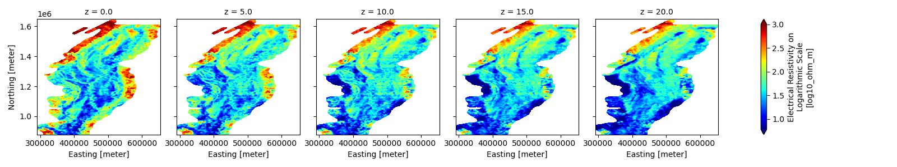
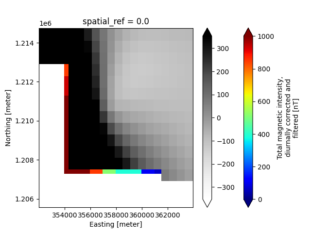

Note
Go to the end to download the full example code.
GeoTIFFs (2D & 3D)
In this example, we demonstrate the workflow for creating a GS file from the GeoTIFF (.tif/.tiff) file format. This includes adding individual TIF files as single 2-D variables, as well as how to create a 3-D variable by stacking multiple TIF files along a specified dimension.
The GS standard requires a single set of x, y, z, t coordinate variables per data leaf group. Therefore, this example also shows how tifs with differing x-y grids need to be added to separate groups, and all variables in a group should have matching coordinates:
- Raster Dataset #1
2-D magnetic grid, original x-y discretization (600 m cell size)
- Raster Dataset #2
2-D magnetic grid, aligned to match the x-y dimensions of the resistivity layers (1000 m cell size)
3-D resistivity grid
Lastly, GSPy provides a “to_tif()” method to export raster data as GeoTIFF. This example demonstrates how to use this method for both 2D and 3D variables.
Source References:
Minsley, B.J., James, S.R., Bedrosian, P.A., Pace, M.D., Hoogenboom, B.E., and Burton, B.L., 2021, Airborne electromagnetic, magnetic, and radiometric survey of the Mississippi Alluvial Plain, November 2019 - March 2020: U.S. Geological Survey data release, https://doi.org/10.5066/P9E44CTQ.
James, S.R., and Minsley, B.J., 2021, Combined results and derivative products of hydrogeologic structure and properties from airborne electromagnetic surveys in the Mississippi Alluvial Plain: U.S. Geological Survey data release, https://doi.org/10.5066/P9382RCI.
import matplotlib.pyplot as plt
from os.path import join
import gspy
from gspy import Survey
Initialize the Survey
# Path to example files
data_path = "..//data_files//tempest_aseg"
# Survey metadata file
metadata = join(data_path, "data//Tempest_survey_md.yml")
# Establish the Survey
survey = Survey.from_dict(metadata)
1dataset_attrs:
2 title: Example Tempest Airborne Electromagnetic (AEM) Dataset
3 institution: USGS Geology, Geophysics, & Geochemistry Science Center
4 source: Contractor provided ASEG-GDF2 formatted data
5 history: This example dataset includes the raw AEM data and gridded magnetic data as provided by the contractor, CGG Canada Services, Ltd, as well as 1-D resistivity models inverted by the USGS using the GALEISBSTDEM time-domain deterministic inversion software (Brodie 2015, Geoscience Australia, Release-20160606).
6 references: "Minsley, B.J., James, S.R., Bedrosian, P.A., Pace, M.D., Hoogenboom, B.E., and Burton, B.L., 2021, Airborne electromagnetic, magnetic, and radiometric survey of the Mississippi Alluvial Plain, November 2019 - March 2020: U.S. Geological Survey data release, https://doi.org/10.5066/P9E44CTQ."
7 comment: This dataset is incomplete and has been downsampled for the purposes of this example.
8 content: Tempest AEM Survey from the Mississippi Alluvial Plain
9
10spatial_ref:
11 wkid: 5070
12 authority: EPSG
13
14survey_information:
15 contractor_project_number: 603756FWA
16 contractor: CGG Canada Services Ltd.
17 client: U.S. Geological Survey
18 survey_type: electromagneticmagneticradiometric
19 survey_area_name: Mississippi Alluvial Plain (MAP)
20 state: MO,AR,TN,MS,LA,IL,KY
21 country: USA
22 acquisition_start: 20191120
23 acquisition_end: 20200307
24 dataset_created: 20200420
25
26survey_units:
27 time: seconds [s]
28 area: square meters [m^2]
29 current: Amperes [A]
30 frequency: Hertz [Hz]
31 electromagnetic_moment: Ampere square meters [Am^2]
32 magnetometer_b_field: nano Tesla [nT]
33 electromagnetic_b_field: femto tesla [fT]
34
35flightline_information:
36 traverse_line_spacing: 6000
37 traverse_line_direction: various
38 nominal_terrain_clearance: 120
39 final_line_kilometers: 24868
40 TRAVERSE LINE NUMBERS: "[192401 - 265021, 400801 - 401401, 500101, 604501 - 608101, 700201 - 700206, 710101 - 710401]"
41 REPEAT LINE NUMBERS: 9100071 - 9180772
42 PRE ZERO LINE NUMBERS: 90200702 - 90207701
43 POST ZERO LINE NUMBERS: 90500702 - 90507701
44
45survey_equipment:
46 aircraft: Cessna C208B
47 aircraft_registration: VH-FHY
48 magnetometer: Bartington MAG-03MS100 three-axis fluxgate
49 magnetometer_installation: Stinger mounted
50 electromagnetic_system: 30Hz TEMPEST
51 electromagnetic_installation: Transmitter loop mounted on the aircraft, Reciver coils in a towed bird
52 electromagnetic_coil_orientations: X,Z
53 spectrometer_system: Radiation Solutions RS-500
54 spectrometer_installation: Mounted in the aircraft
55 radar_altimeter_system: Collins Alt-50
56 radar_altimeter_sample_rate: 0.1 s
57 laser_altimeter_system: Riegl LD90-3
58 laser_altimeter_sample_rate: 0.1 s
59 navigation_system: Real-time differential GPS
60 navigation_sample_rate: 1.0 s
61 acquisition_system: FASDAS
Create a branch for all maps
container = survey.gs.add_container('derived_products',
**dict(content = "container of gridded maps of magnetic and electrical resistivity values",
comment = "Magnetic map is contractor-derived, resistivity maps are USGS-derived"))
Attach the 2D Magnetic Raster Dataset (600 m cell size)
Define input metadata file, which contains the TIF filename linked with desired variable name and info.
d_supp1 = join(data_path, 'data//Tempest_raster_md.yml')
# Attach the magnetic map to the container
mm = container.gs.add(key="mag_map", metadata_file=d_supp1)
1dataset_attrs:
2 comment: contractor-derived product
3 content: gridded map of total magnetic intensity
4 type: data
5 mode: airborne
6 method: magnetic
7 instrument: Scintrex CS-3 cesium vapor magnetometer
8
9magnetic_system:
10 type: system
11 mode: airborne
12 method: magnetic
13 instrument: Scintrex CS-3 c cesium-vapor magnetometer
14
15 prefixes: ['base_magnetometer']
16
17 dimensions:
18 base_mag_locations:
19 standard_name: base_mag_locations
20 long_name: Base Magnetometer Location Index Numbers
21 units: not_defined
22 missing_value: not_defined
23 length: 6
24 increment: 1
25 origin: 1
26
27 variables:
28 transmitter:
29 label: passive
30 description: No artificial transmitter was used; the system measures the Earth's natural magnetic field (passive field).
31
32 receiver:
33 label: scalar_magnetometer
34 sensor_type: cesium_vapor
35 sensor_model: CS-3
36 sensor_manufacturer: Scintrex
37 description: Scalar cesium-vapor magnetometer mounted in the aircraft tail stinger.
38 Magnetic samples are processed by a FASDAS magnetometer processor
39 board and synchronized via GPS PPS; a Bartington MAG-03MS100
40 three-axis fluxgate provides aircraft attitude for compensation.
41 orientation: tail-stinger mounted
42 coordinates:
43 values: "[-10.74, 0.0, -0.55]"
44 long_name: magnetometer location relative to Tx loop center (X,Y,Z)
45 units: meters
46 acquisition_system: FASDAS survey/magnetometer computer; NovAtel OEMV-3 GPS with
47 OMNISTAR differential corrections; dynamic compensation driven by IMU
48 and fluxgate attitude inputs. A tail stinger mounted Bartington MAG-03MS100 three-axis fluxgate magnetometer is used to provide information on the attitude of the aircraft. This information is used for compensation of the measured magnetic total field.
49 sample_frequency:
50 values: 0.2
51 units: s
52 sensitivity:
53 values: 0.001
54 units: nT
55 typical_noise:
56 values: 1.0
57 units: nT
58 compensation: fully digital
59 parallax:
60 values: 1.8
61 units: s
62
63 base_magnetometer:
64 label: base_magnetometer
65 description: Ground magnetic base stations established at low-gradient sites; two CF1 magnetometers operated continuously at 1 s sampling with ~0.01 nT sensitivity. Base data edited to remove spikes/level shifts and used for diurnal correction per base location.
66 sensor_type: CF1 magnetometer
67 sample_frequency:
68 values: 1
69 units: s
70 sensitivity:
71 values: 0.01
72 units: nT
73
74 location_names:
75 values: ["Greenwood, MS", "Alexandria, LA", "Monroe, LA", "West Memphis, AR", "Sikeston, MO", "Greenwood, MS"]
76 dimensions: 'base_mag_locations'
77
78 flights:
79 values: ["007-027", "028-036", "038-042", "044-062", "063-074", "075-077"]
80 dimensions: 'base_mag_locations'
81
82 values:
83 values: [49170.0, 47640.7, 48362.6, 50083.5, 51678.8, 49170.0]
84 dimensions: 'base_mag_locations'
85
86
87 dynamic_compensation: Compensation calibration flights at high altitude; pitches/rolls/yaws used to derive coefficients that remove aircraft-induced magnetic noise. Reported improvement ratio ~2.91 (std. dev. uncompensated vs. compensated).
88 diurnal_correction: Diurnal base values applied by location (see base_magnetometer section); base data edited and filtered to remove non-geophysical disturbances.
89 igrf_model_date: "2019-12-01"
90 igrf_model_height: "167.9 m"
91 igrf_removed_model_epoch: "2015.0"
92 tieline_levelling: RMI levelled to prior RESOLVE data; due to height differences and limited tie lines, manual adjustments and micro-levelling were applied.
93 deliverables: "Total Magnetic Intensity (TMI), provided with EM & terrain data"
94
95 couplet:
96 transmitters: [passive]
97 receivers: [scalar_magnetometer]
98 description: Passive Earth field transmitter paired with single scalar magnetometer receiver mounted in tail stinger.
99
100coordinates:
101 x: Easting_Albers
102 y: Northing_Albers
103
104dimensions:
105 x: Easting_Albers
106 y: Northing_Albers
107
108variables:
109 magnetic_tmi:
110 dimensions: [x, y]
111 system_couplet: passive_scalar_magnetometer
112 standard_name: total_magnetic_intensity
113 long_name: Total magnetic intensity, diurnally corrected and filtered
114 units: nT
115 missing_value: 1.70141e+38
116 files: [mag.tif]
117
118 Easting_Albers:
119 standard_name: easting_albers
120 long_name: Easting
121 units: meter
122 missing_value: not_defined
123
124 Northing_Albers:
125 standard_name: northing_albers
126 long_name: Northing
127 units: meter
128 missing_value: not_defined
Attach 3D Resistivity Grids + Aligned 2D Magnetic Raster (1000 m cell size)
Import both 3-D resistivity and 2-D magnetic data, aligned onto a common 1000 m x 1000 m grid
d_supp2 = join(data_path, 'data//Tempest_rasters_md.yml')
# Attach rasters to the container
rm = container.gs.add(key="all_maps", metadata_file=d_supp2)
1dataset_attrs:
2 comment: resistivity models are USGS-derived, the total magnetic intensity map is contractor-derived
3 content: interpolated resistivity models (3-D depth grid) and total magnetic intensity map (2-D)
4 type: data, models
5 method: ["electromagnetic, time domain","magnetic"]
6 instrument: 30Hz Tempest
7 mode: airborne
8 property: electrical resistivity, total magnetic intensity
9
10coordinates:
11 x: Easting_Albers
12 y: Northing_Albers
13 z: depth
14
15dimensions:
16 x: Easting_Albers
17 y: Northing_Albers
18
19 depth:
20 comment: depth is defined here inside our yaml file in order to stack the resistivity tifs along a third dimension. This depth information is not contained in any of the individual tifs.
21 standard_name: depth
22 long_name: Depth below earth's surface DTM
23 units: m
24 missing_value: not_defined
25 length: 5
26 increment: 5.0
27 origin: 0.0
28 positive: down
29 datum: ground surface
30
31variables:
32 Easting_Albers:
33 standard_name: easting_albers
34 long_name: Easting
35 units: meter
36 missing_value: not_defined
37
38 Northing_Albers:
39 standard_name: northing_albers
40 long_name: Northing
41 units: meter
42 missing_value: not_defined
43
44 resistivity:
45 dimensions: [x, y, z]
46 standard_name: log10_resistivity
47 long_name: Electrical Resistivity on Logarithmic Scale
48 units: log10_ohm_m
49 missing_value: -9999.99
50 files: [resistivity_0_5m.tif,
51 resistivity_5_10m.tif,
52 resistivity_10_15m.tif,
53 resistivity_15_20m.tif,
54 resistivity_20_25m.tif]
55
56 magnetic_tmi:
57 dimensions: [x, y]
58 standard_name: total_magnetic_intensity
59 long_name: Total magnetic intensity, diurnally corrected and filtered
60 units: nT
61 missing_value: -999999
62 files: [mag_aligned.tif]
Note: the stack dimension is defined as “depth” but for the resistivity variable the dimensions are listed as [x, y, z] … this is because under coordinates we are linking the z coordinate dimension to the incoming depth dimension. Therefore the name “depth” ends up not getting used because that dimension becomes “z” instead.
Inspect the data tree
print(survey)
<xarray.DataTree 'survey'>
Group: /survey
│ Dimensions: ()
│ Coordinates:
│ spatial_ref float64 8B 0.0
│ Data variables:
│ survey_information float64 8B nan
│ survey_units float64 8B nan
│ flightline_information float64 8B nan
│ survey_equipment float64 8B nan
│ Attributes:
│ type: survey
│ title: Example Tempest Airborne Electromagnetic (AEM) Dataset
│ institution: USGS Geology, Geophysics, & Geochemistry Science Center
│ source: Contractor provided ASEG-GDF2 formatted data
│ history: This example dataset includes the raw AEM data and gridded ...
│ references: Minsley, B.J., James, S.R., Bedrosian, P.A., Pace, M.D., Ho...
│ comment: This dataset is incomplete and has been downsampled for the...
│ content: Tempest AEM Survey from the Mississippi Alluvial Plain
└── Group: /survey/derived_products
│ Dimensions: ()
│ Data variables:
│ spatial_ref float64 8B 0.0
│ Attributes:
│ content: container of gridded maps of magnetic and electrical resistivit...
│ comment: Magnetic map is contractor-derived, resistivity maps are USGS-d...
│ type: container
├── Group: /survey/derived_products/mag_map
│ │ Dimensions: (x: 599, nv: 2, y: 1212)
│ │ Coordinates:
│ │ spatial_ref float64 8B 0.0
│ │ * x (x) float64 5kB 2.928e+05 2.934e+05 ... 6.51e+05 6.516e+05
│ │ * nv (nv) int64 16B 0 1
│ │ * y (y) float64 10kB 1.607e+06 1.606e+06 ... 8.808e+05 8.802e+05
│ │ Data variables:
│ │ x_bnds (x, nv) float64 10kB 2.925e+05 2.931e+05 ... 6.519e+05
│ │ y_bnds (y, nv) float64 19kB 1.607e+06 1.606e+06 ... 8.799e+05
│ │ magnetic_tmi (y, x) float64 6MB nan nan nan nan nan ... nan nan nan nan nan
│ │ Attributes:
│ │ comment: contractor-derived product
│ │ content: gridded map of total magnetic intensity
│ │ type: data
│ │ mode: airborne
│ │ method: magnetic
│ │ instrument: Scintrex CS-3 cesium vapor magnetometer
│ │ structure: raster
│ └── Group: /survey/derived_products/mag_map/magnetic_system
│ Dimensions: (base_mag_locations: 6, nv: 2,
│ n_transmitter: 1, n_receiver: 1,
│ n_couplet: 1, n_base_magnetometer: 1)
│ Coordinates:
│ * base_mag_locations (base_mag_locations) int64 48B 1 2 ... 6
│ * n_transmitter (n_transmitter) int64 8B 0
│ * n_receiver (n_receiver) int64 8B 0
│ * n_couplet (n_couplet) int64 8B 0
│ * n_base_magnetometer (n_base_magnetometer) int64 8B 0
│ Data variables: (12/35)
│ base_mag_locations_bnds (base_mag_locations, nv) float64 96B ...
│ transmitter_label (n_transmitter) <U7 28B 'passive'
│ transmitter_description (n_transmitter) <U107 428B "No artifi...
│ receiver_label (n_receiver) <U19 76B 'scalar_magneto...
│ receiver_sensor_type (n_receiver) <U12 48B 'cesium_vapor'
│ receiver_sensor_model (n_receiver) <U4 16B 'CS-3'
│ ... ...
│ diurnal_correction <U142 568B 'Diurnal base values appli...
│ igrf_model_date <U10 40B '2019-12-01'
│ igrf_model_height <U7 28B '167.9 m'
│ igrf_removed_model_epoch <U6 24B '2015.0'
│ tieline_levelling <U137 548B 'RMI levelled to prior RES...
│ deliverables <U63 252B 'Total Magnetic Intensity (...
│ Attributes:
│ type: system
│ mode: airborne
│ method: magnetic
│ instrument: Scintrex CS-3 c cesium-vapor magnetometer
│ name: magnetic_system
└── Group: /survey/derived_products/all_maps
Dimensions: (z: 5, nv: 2, x: 363, y: 770)
Coordinates:
spatial_ref float64 8B 0.0
* z (z) float64 40B 0.0 5.0 10.0 15.0 20.0
* nv (nv) int64 16B 0 1
* x (x) float64 3kB 2.915e+05 2.925e+05 ... 6.525e+05 6.535e+05
* y (y) float64 6kB 1.648e+06 1.647e+06 ... 8.798e+05 8.788e+05
Data variables:
z_bnds (z, nv) float64 80B -2.5 2.5 2.5 7.5 ... 12.5 17.5 17.5 22.5
x_bnds (x, nv) float64 6kB 2.91e+05 2.92e+05 ... 6.53e+05 6.54e+05
y_bnds (y, nv) float64 12kB 1.648e+06 1.647e+06 ... 8.783e+05
resistivity (z, y, x) float64 11MB nan nan nan nan nan ... nan nan nan nan
magnetic_tmi (y, x) float32 1MB nan nan nan nan nan ... nan nan nan nan nan
Attributes:
comment: resistivity models are USGS-derived, the total magnetic inte...
content: interpolated resistivity models (3-D depth grid) and total m...
type: data, models
method: ['electromagnetic, time domain', 'magnetic']
instrument: 30Hz Tempest
mode: airborne
property: electrical resistivity, total magnetic intensity
structure: raster
Save to NetCDF file
d_out = join(data_path, 'tifs.nc')
survey.gs.to_netcdf(d_out)
Option 1:
Pass a variable name to export just that variable
survey['derived_products']["all_maps"].gs.to_tif('magnetic_tmi')
magnetic_tmi.tif
Option 2:
Export all the variables by NOT passing any variable names, but need to specify a slice dimension for the 3D resistivity variable. Can optionally pass a directory path to export tiffs to.
survey['derived_products']["all_maps"].gs.to_tif(slice_dim='z', out_dir=data_path)
../data_files/tempest_aseg/resistivity_0.0.tif
../data_files/tempest_aseg/resistivity_5.0.tif
../data_files/tempest_aseg/resistivity_10.0.tif
../data_files/tempest_aseg/resistivity_15.0.tif
../data_files/tempest_aseg/resistivity_20.0.tif
../data_files/tempest_aseg/magnetic_tmi.tif
Reading back in the GS NetCDF file
new_survey = gspy.open_datatree(d_out)['survey']
Plotting
Make a map-view plot of a specific data variable, using Xarray’s plotter In this case, we slice the 3-D resistivity variable along the depth dimension
r_plot = new_survey['derived_products']["all_maps"]['resistivity'].plot(col='z', vmax=3, cmap='jet', robust=True)

Make a map-view plot comparing the different x-y discretization of the two magnetic variables, using Xarray’s plotter
plt.figure()
ax=plt.gca()
plot1 = new_survey['derived_products']["all_maps"]['magnetic_tmi'].plot(ax=ax, cmap='jet', vmin=0, vmax=1000, robust=True)
plot2 = new_survey['derived_products']["mag_map"]['magnetic_tmi'].plot(ax=ax, cmap='Greys', cbar_kwargs={'label': ''}, robust=True)
plt.ylim([1.20556e6, 1.21476e6])
plt.xlim([3.5201e5, 3.6396e5])
plt.show()

Total running time of the script: (0 minutes 0.923 seconds)